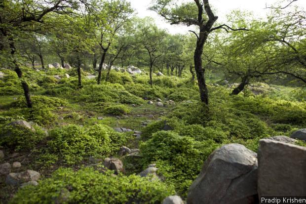
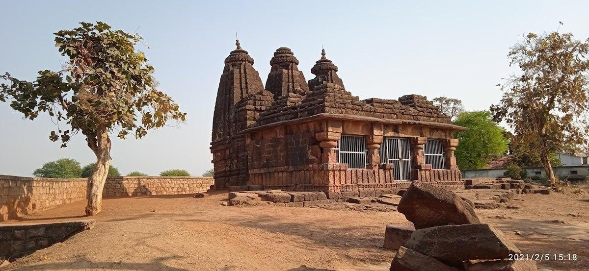
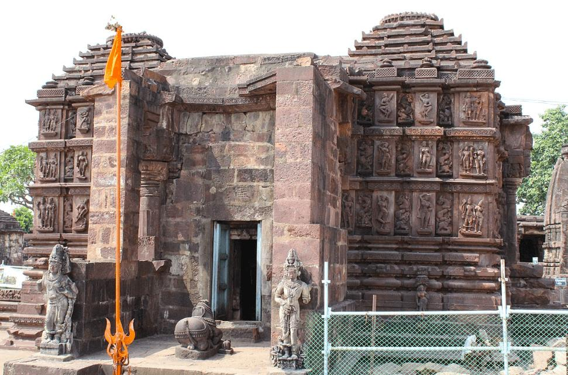
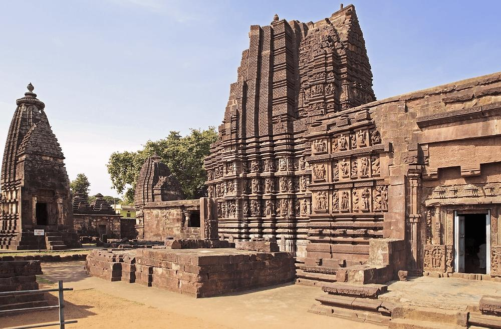
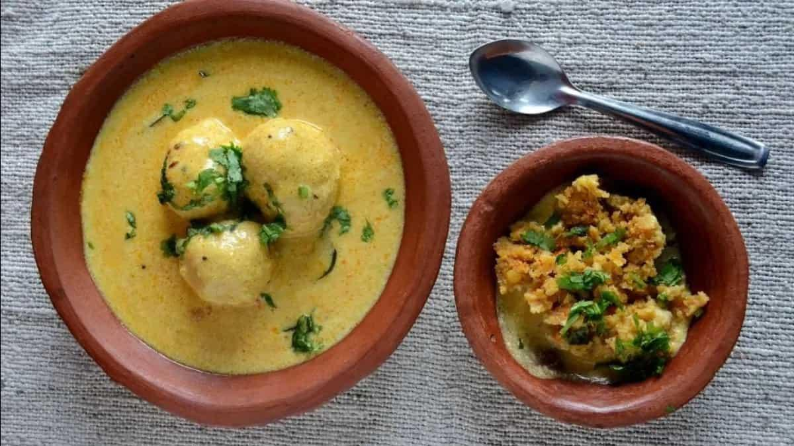
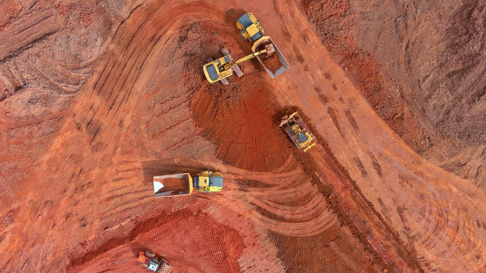
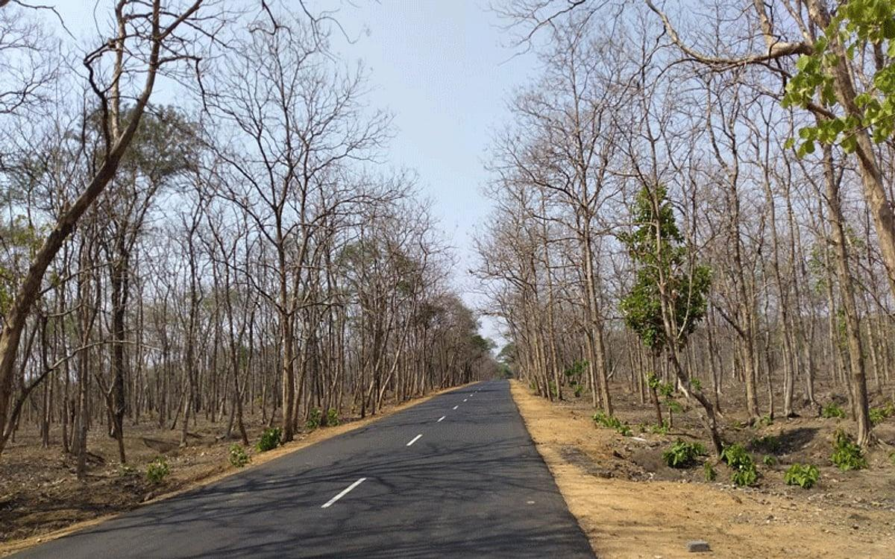
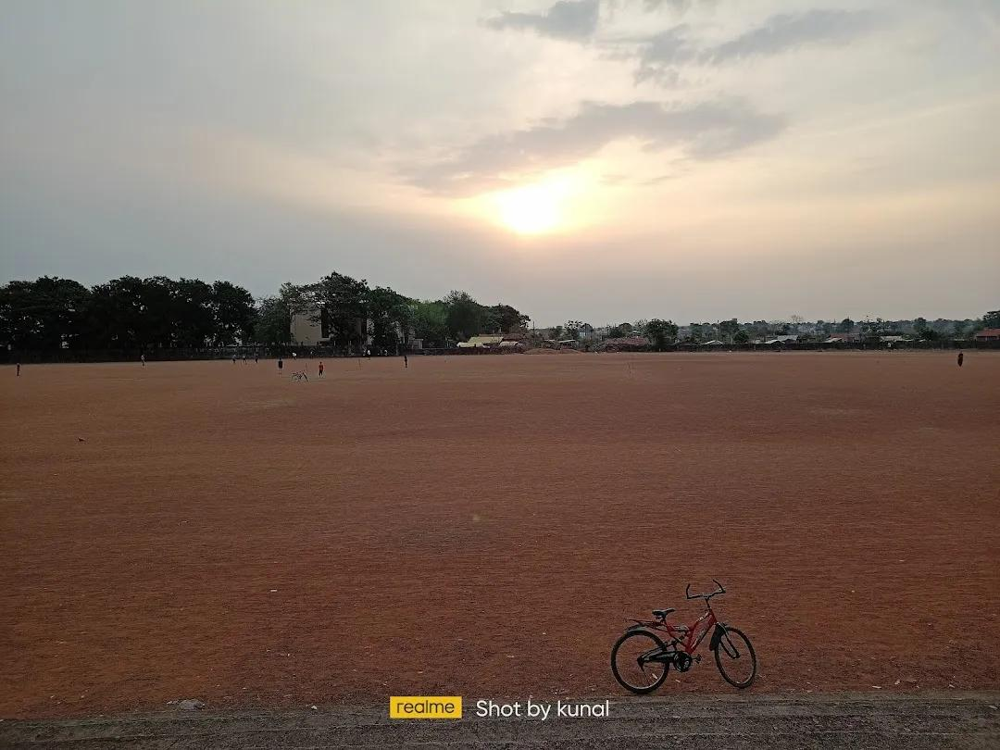

About

Situated on the eastern border of Maharashtra, touching Chhattisgarh and Telangana, Gadchiroli is a remote region known for its dense deciduous woodlands and the Godavari, Pranhita, and Indravati river systems. It is one of India's most ecologically pristine yet heavily underdeveloped districts, heavily reliant on sustainable community forest management.
- Location:Eastern border of Maharashtra, India (touching Chhattisgarh and Telangana)
- Famous as:The "Land of Forests" and home to the ancient Markandadeo temples
History

The history of the area traces back to the Mesozoic Era (the Age of Dinosaurs) and the Early Stone Age, with rich archaeological findings. It later became the northern boundary of the Gond kingdom. Later, it fell under Maratha control in 1751 through Raghuji Bhosale of Nagpur, followed by British administration in the 19th century until it gained its modern district status in 1982.
- Gadchiroli was once ruled by ancient dynasties and the powerful Gond Kingdom. It shifted to Maratha control in 1751 and British rule in 1853. The area became its own independent district on August 26, 1982.
Culture

Nearly 40% of the population belongs to tribal communities, primarily the Gond, Madia, Pardhan, and Kolam groups. The community observes unique traditions, such as worshipping "Persa Pen" and performing vibrant cultural routines like the Rela and Dhol dances, especially during harvests and festivals like Holi, Dasara, and Diwali.
- Main Festivals:Holi, Dasara, Diwali, and tribal celebrations honoring the deity Persa Pen.
- Traditional Arts: Vibrant Rela dances, Dhol drumming, and beautiful Dokra brass metal crafts.
- Language:Marathi is the official language, alongside indigenous Gondi and Madiya dialects.
Tourism

Known as an offbeat destination for eco-tourists and history buffs, major attractions include the "Khajuraho of Vidarbha"—the ancient group of 24 temples at Markandadeo, the Chaparala Wildlife Sanctuary/Prashant Dham, and the colonial-era Rest House in Sironcha. The dense forests and hilly terrains of Bhamragad and Surjagad also attract trekkers and nature lovers.
- Markandadeo Temple ComplexKnown as the "Khajuraho of Vidarbha," this is a cluster of beautiful, ancient stone temples dedicated to Lord Shiva. It sits peacefully along the banks of the Wainganga River. The complex features incredible, intricate stone carvings that depict historical and mythological stories.
- Chaprala Wildlife SanctuaryThis pristine nature reserve is a paradise for wildlife lovers and birdwatchers. Nestled near the meeting point of the Wardha and Wainganga rivers, the sanctuary is home to diverse animals like deer, wild boars, leopards, and many unique birds. There is also a famous Hanuman Temple located inside the area.
- Lok Biradari Prakalp (Hemalkasa)Founded by renowned social workers Baba Amte and Dr. Prakash Amte, this globally respected social project is a deeply inspiring place to visit. Alongside its tribal welfare programs, it houses the "Animal Ark," a unique orphanage and sanctuary where injured and orphaned wild forest animals are cared for.
Famous Food

The local cuisine is rustic and heavily shaped by the forest and agricultural produce. Traditional Gond and Madia tribal meals feature staple crops like paddy (rice) and jowar, complemented by foraged wild mushrooms, forest leafy greens, and freshwater fish caught from local rivers.
- Famous Food:Spicy Varadi Chicken, Saoji Mutton, and Tari Poha served for breakfast.
- Local Specialty:: Traditional Ambil (a sour, fermented millet drink) and highly popular homemade spicy pickles.
Economy

The economy relies on subsistence agriculture (primarily paddy) and forest products, including tendu leaves and bamboo. Traditional cottage industries, such as Tussar silk worm rearing in Armori, rice mills, and forest-based livelihood cooperatives, are vital to local sustainability.
- Key Industries:Forest-based businesses (like tendu leaf collection and bamboo cutting), rice mills, and Tussar silk weaving.
- Main Crops:Paddy (rice) is the major crop, alongside jowar (sorghum), linseed, and pulses.
Environment

Over 79% of the geographical area is covered by dense hills and lush forests, making it a crucial ecological zone. It supports a diverse range of flora and fauna, including rare wildlife, but faces environmental challenges like deforestation, which impacts the traditional forest-based lifestyle of the tribes.
- Climate:Hot and tropical weather with scorching summers, heavy monsoon rains, and pleasant winters.
- Key Rivers:The Godavari, Wainganga, Pranhita, and Indravati rivers flow through the region.
- Protected Areas:Home to the lush Chaprala Wildlife Sanctuary and parts of the Bhamragarh Wildlife Sanctuary.
Sports

Traditional rural sports and games like Kabaddi, Kho-Kho, and wrestling are popular among the youth in villages. Local schools and regional authorities are actively encouraging indigenous and regional sports to promote health and engagement within remote tribal areas.
- Traditional Sports:Popular rural and indigenous games including Kabaddi, Kho-Kho, and traditional village wrestling.
- Focus:Promoting fitness and youth engagement through school-level sports meets and regional tribal tournaments.